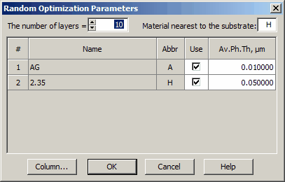
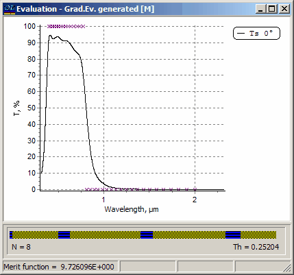
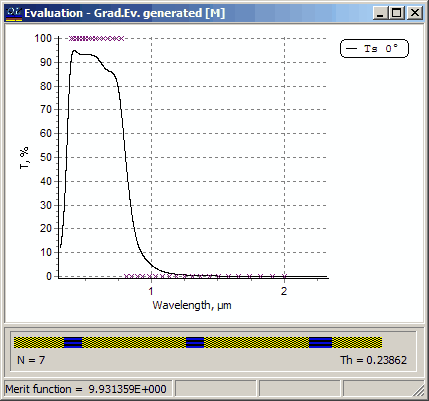

Exercise 15. Metal-dielectric coating
Exercise 15. Metal-dielectric coating
This exercise demonstrates the design of a metal-dielectric filter. Required files are located in the Problem Directory EX15. In SF Mode you need to use Import Problem Directory command (File Menu).
Load GLASS substrate, and layer material files with the names 2.35 and AG. The last file presents silver refractive index and extinction coefficient in the spectral range from 400 to 2000nm. Note that in the same directory you can find the ASCII file AG.DAT with this data and experiment with import ASCII data option of OptiLayer.
Using Arrange Materials menu item of the Data menu assign the abbreviation A to the AG material.
Also in General Configuration dialog set microns as Length units and Physical as Thickness units. As soon as we are working with a metal layer, physical units for thicknesses are more convenient.
Examine the target function stored in the file Mdfilter in the Target database. We shall design a short wave-pass filter having a high transmittance zone in the spectral range from 0.4 to 0.8 micron and a low transmittance zone in the spectral range from 0.8 to 2.0 microns. Load this file to memory.
Choose the Newton method (Analysis and Synthesis Options dialog).
Try different strategies to design the required filter. It is possible to start with the Random Optimization and then to proceed with the Needle Optimization AUTO. Good results are obtained with the following Random Optimization Settings:

It is also possible to use the Gradual Evolution option. It is important that this option provides a general understanding about the achievable spectral performance and about the price one should pay for improving the design performance. Most likely that with the given materials it is sufficient to limit the number of design layers by 7. Further increase of design thickness and the number of layers give only a small improvement of the merit function.
Here you can see the obtained 8-layer design (finalizing Needle Optimization procedure added one more layer):

Layer number 1 has physical thickness 2.88nm and can be removed with the help of Thin Layer Removal command without noticeable degradation of the obtained design. You will obtain the following design:
